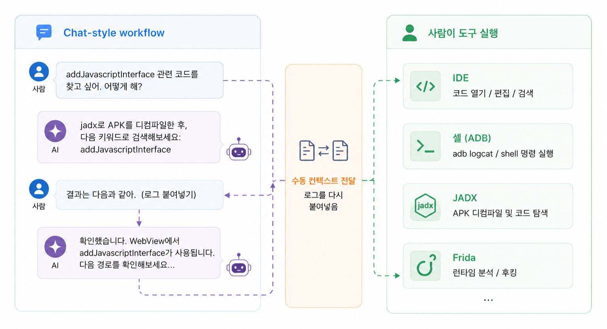
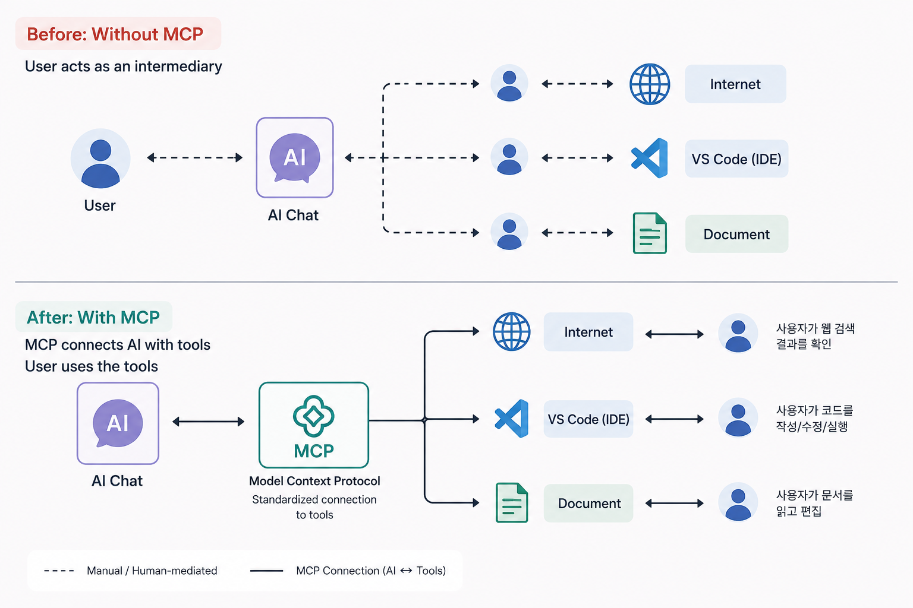
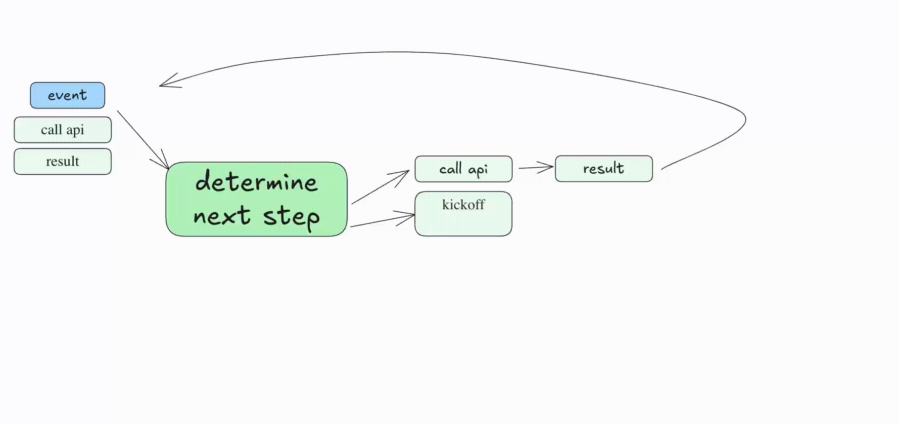
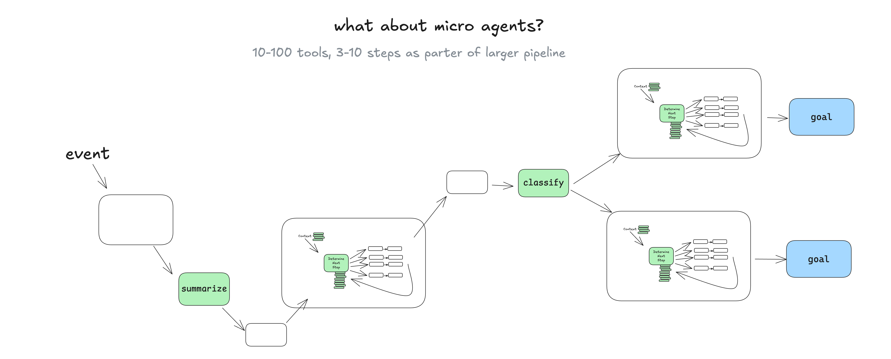
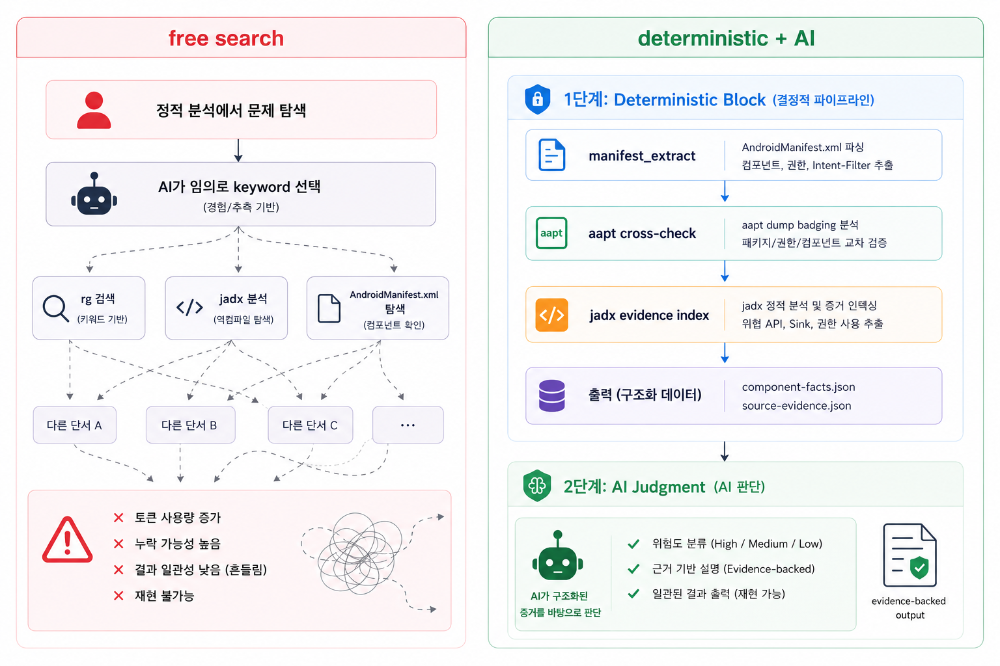
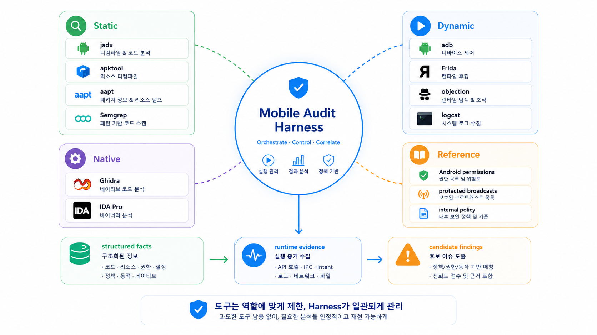
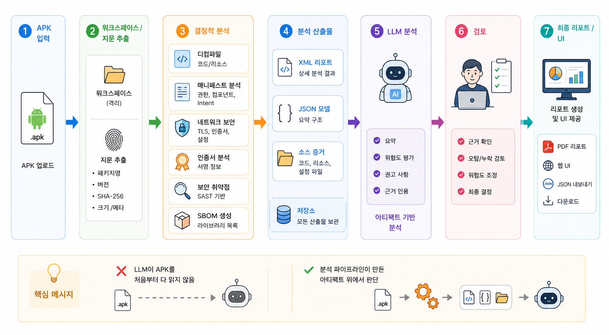

merged manifest → JSON
코드로 추출 가능한 사실은 먼저 구조화합니다.
채팅 Q&A에서 실행 가능한 분석 루프로
에이전트 워크플로 세미나
PART 01
채팅 → 도구 호출 → MCP → Skill

모델 지식만으로는 현재 대상을 볼 수 없고, 컨텍스트가 루프에 들어와야 합니다.
flowchart LR TextIn["텍스트
질문"]:::text --> Model["LLM
내재 지식"]:::model Model --> TextOut["텍스트
답변"]:::text Model --> Call["tool_call"]:::host Call --> Host["Host
정책 + 실행"]:::host Host --> External External["외부 컨텍스트
파일 · 로그 · 도구 · 런타임"]:::context --> Model classDef text fill:#ffffff,stroke:#94a3b8,color:#111827,stroke-width:1.8px; classDef model fill:#f8fafc,stroke:#2563eb,color:#111827,stroke-width:2.4px; classDef context fill:#ffffff,stroke:#d97706,color:#111827,stroke-width:2px; classDef host fill:#ffffff,stroke:#0f766e,color:#111827,stroke-width:2.2px;
sequenceDiagram
autonumber
participant U as User
participant A as Host / App
participant M as Model
participant T as Tool / MCP
U->>A: 사용자 프롬프트
A->>M: 사용자 프롬프트 + tool schema
M-->>A: tool_call schema(name, args)
alt 응답이 tool_call schema
A->>T: tool 실행(name, args)
T-->>A: tool_result(JSON)
A->>M: tool_result + 원래 요청 context
M-->>A: 최종 답변
else 일반 답변
M-->>A: 최종 답변
end
A-->>U: 응답
BASIC CONCEPTS
AI 도구를 위한 표준 연결

보안 감사에서 AI가 호출할 수 있는 도구 서버
APK · DEX · Manifest 분석: jadx · apktool · aapt · Semgrep
기기 실행 · 로그 · 후킹: adb · logcat · Frida · objection
so 분석 · 호출 흐름: Ghidra · IDA Pro · radare2
Host 권한 안에서 실행하고 AI가 결과를 해석합니다.
BASIC CONCEPTS
도구 위의 재사용 절차
my-skill/ ├── SKILL.md # metadata + instructions ├── scripts/ # optional executable code ├── references/ # policies, API specs, checklists └── assets/ # templates, examples, static files
flowchart TB
Catalog["이름 + 설명"]:::catalog --> Match{"작업과 맞나?"}:::decision
Match -->|아니오| Skip["로드하지 않음"]:::muted
Match -->|예| Skill["SKILL.md 읽기"]:::skill
Skill --> Refs["references/"]:::file
Skill --> Scripts["scripts/"]:::file
Skill --> Assets["assets/"]:::file
Skill --> Tools["도구 / MCP / 셸 사용"]:::tool
Tools --> Evidence["증거 보고"]:::success
classDef catalog fill:#ffffff,stroke:#0284c7,color:#111827,stroke-width:2px;
classDef decision fill:#ffffff,stroke:#d97706,color:#111827,stroke-width:2px;
classDef muted fill:#f8fafc,stroke:#94a3b8,color:#334155,stroke-width:1.5px;
classDef skill fill:#ffffff,stroke:#0f766e,color:#111827,stroke-width:2.5px;
classDef file fill:#ffffff,stroke:#2563eb,color:#111827,stroke-width:1.8px;
classDef tool fill:#ffffff,stroke:#4f46e5,color:#111827,stroke-width:2px;
classDef success fill:#ffffff,stroke:#16a34a,color:#111827,stroke-width:2px;
--- name: android-open-components description: exported Android component, deep link, missing permission 감사에 사용. --- 목표: 외부에서 접근 가능한 Android component 찾기. 입력: merged-manifest.json, jadx source map, references/android-component-policy.md 절차: 1. manifest를 구조화된 component record로 파싱. 2. 각 component에 source와 permission context 연결. 3. 모델에는 사실 재탐색이 아니라 위험 판단만 맡김. 출력: component table, evidence, risk, validation command.
PART 02
계획 → 실행 → 관찰 → 수정
어떤 순서로 쓰고 어떤 형식으로 보고할지
AI 클라이언트 ↔ 도구 서버
jadx / adb / frida / 파일 읽기

도구 확산 · 다중 턴 오류 · 컨텍스트 과부하 · 목표 이탈
다음 호출이 모호함
오류가 누적됨
제약이 서로 충돌함
국소 단계가 목표보다 앞섬

flowchart TB Task["감사 작업"]:::input --> Harness["API Harness"]:::core Harness --> Model["LLM
다음 도구 계획"]:::model Model --> Tools["허용된 도구
rg · read_file · lookup"]:::tool Tools --> Ledger["증거 원장"]:::evidence Ledger --> Model Model --> Final["엄격한 스키마 출력"]:::final Final --> Validate["로컬 검증
경로 · 라인 · 증거"]:::success classDef input fill:#f8fafc,stroke:#64748b,color:#111827,stroke-width:1.5px; classDef core fill:#ffffff,stroke:#e11d48,color:#111827,stroke-width:2.5px; classDef model fill:#ffffff,stroke:#2563eb,color:#111827,stroke-width:2.2px; classDef tool fill:#ffffff,stroke:#e11d48,color:#111827,stroke-width:1.8px; classDef evidence fill:#ffffff,stroke:#d97706,color:#111827,stroke-width:2px; classDef final fill:#ffffff,stroke:#7c3aed,color:#111827,stroke-width:2px; classDef success fill:#ffffff,stroke:#16a34a,color:#111827,stroke-width:2px;
먼저 사실을 고정하고, 애매한 요청은 실행 전에 좁힙니다.
코드로 추출 가능한 사실은 먼저 구조화합니다.
대상 · 범위 · 검증 조건을 정한 뒤 루프를 시작합니다.
요청: WebView 취약점 검토 Harness 계획: 1. 후보: JS bridge / file access / mixed content / allowlist 2. 정적: Manifest + WebView settings + bridge hits 3. 동적: ADB launch + Frida trace 4. 도구: jadx / adb / Frida 5. 종료: 증거 또는 주의점
PART 04
재현 가능한 APK 산출물.



BACKUP
BACKUP
flowchart TD U["APK 첨부
'이 앱의 이슈 찾기'"]:::input --> H["AI Host / MCP Client"]:::host H --> S["Static MCP 도구"]:::static H --> D["Dynamic MCP 도구"]:::dynamic S --> S1["APK 디컴파일
JADX / apktool"]:::tool S --> S2["파일 읽기
manifest / source / config"]:::tool S --> S3["정적 테스트
Semgrep / rules / parser"]:::tool S --> S4["Ghidra
native 라이브러리 분석"]:::tool D --> D1["adb install"]:::tool D --> D2["adb shell / logcat"]:::tool D --> D3["동적 테스트
intent / deeplink / WebView"]:::tool S1 --> E["증거 묶음"]:::evidence S2 --> E S3 --> E S4 --> E D1 --> E D2 --> E D3 --> E E --> F["AI triage
후보 finding + 주의점"]:::success classDef input fill:#ffffff,stroke:#0284c7,color:#111827,stroke-width:2px; classDef host fill:#ffffff,stroke:#2563eb,color:#111827,stroke-width:2.4px; classDef static fill:#ffffff,stroke:#0f766e,color:#111827,stroke-width:2.2px; classDef dynamic fill:#ffffff,stroke:#7c3aed,color:#111827,stroke-width:2.2px; classDef tool fill:#f8fafc,stroke:#2563eb,color:#111827,stroke-width:1.8px; classDef evidence fill:#ffffff,stroke:#d97706,color:#111827,stroke-width:2px; classDef success fill:#ffffff,stroke:#16a34a,color:#111827,stroke-width:2.2px;
BACKUP
재사용 워크플로 · 반복 붙여넣기 없음
BACKUP
저장소 · 매니페스트 탐색
계획 · 스크립트 · 보고
ReAct · MCP 분석
BACKUP
BACKUP
flowchart TB Work["사람 작업"]:::start --> Harness["Tool / Harness
수집 · 파싱 · 실행"]:::tool Harness --> AI["AI 판단
분석 · PoC
진단"]:::step AI --> Evidence["증거 보고"]:::evidence Evidence --> Human["사람
최종 분석 · 후속 조치"]:::success classDef start fill:#ffffff,stroke:#2563eb,color:#111827,stroke-width:2.5px; classDef tool fill:#ffffff,stroke:#0f766e,color:#111827,stroke-width:2.2px; classDef step fill:#f8fafc,stroke:#2563eb,color:#111827,stroke-width:1.8px; classDef evidence fill:#ffffff,stroke:#d97706,color:#111827,stroke-width:2px; classDef success fill:#ffffff,stroke:#16a34a,color:#111827,stroke-width:2px;
BACKUP
보안 감사 작업 분해
결정적 반복 작업 자동화
Manifest · Gradle · API 정책 입력
분석 · PoC · 진단
최종 분석 · 조치 · 티켓 · 패치
BACKUP
flowchart TD S0["Scenario Review 시작"]:::start --> S1["현재 앱 finding
보고서 요약 로드"]:::step S1 --> S2["앱 간 조회
pkg · component · deeplink"]:::db S2 --> S3["시나리오 컨텍스트
현재 + 관련 소스"]:::context S3 --> S4["Scenario Review LLM 호출"]:::llm S4 --> S5["공격 시나리오
검증 계획 / 주의점"]:::judge S5 --> S6["scenario-review 산출물 저장"]:::done classDef start fill:#ffffff,stroke:#d97706,color:#111827,stroke-width:2px; classDef step fill:#ffffff,stroke:#0f766e,color:#111827,stroke-width:1.8px; classDef db fill:#f8fafc,stroke:#94a3b8,color:#111827,stroke-width:1.8px; classDef context fill:#ffffff,stroke:#0284c7,color:#111827,stroke-width:2px; classDef llm fill:#ffffff,stroke:#2563eb,color:#111827,stroke-width:2.4px; classDef judge fill:#ffffff,stroke:#7c3aed,color:#111827,stroke-width:2px; classDef done fill:#ffffff,stroke:#16a34a,color:#111827,stroke-width:2.2px;
BACKUP
파일과 스크립트 검토
최소 도구와 MCP 권한
기기 · 후킹 · 보고 작업은 수동
실행 증거 보관